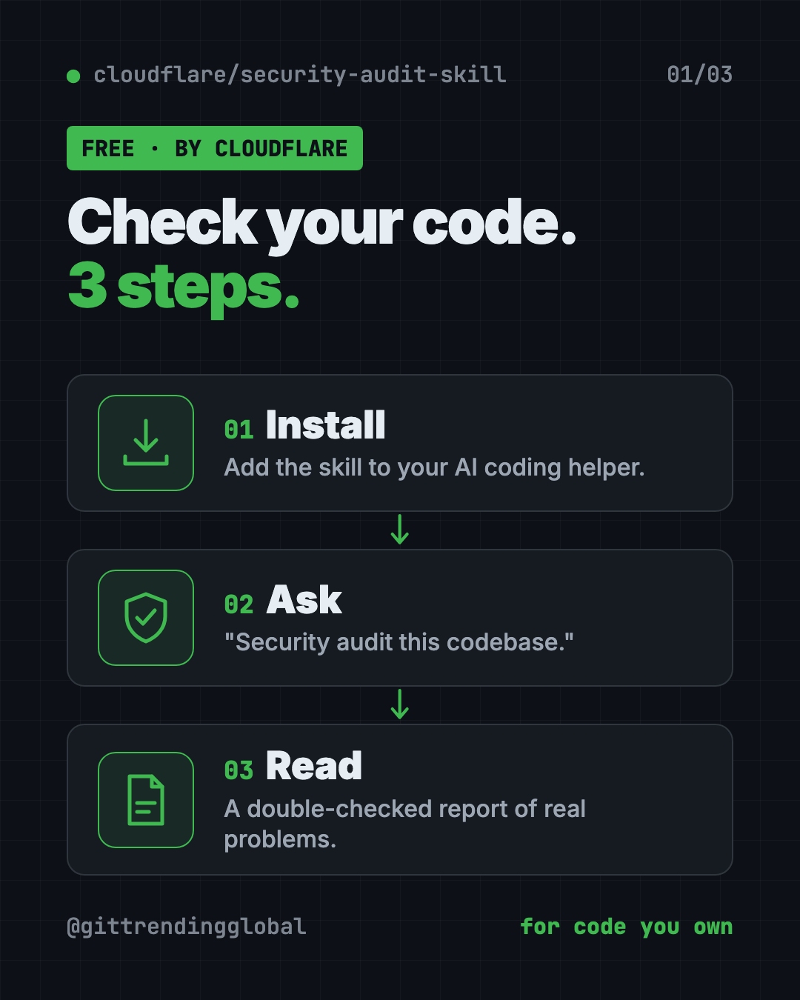
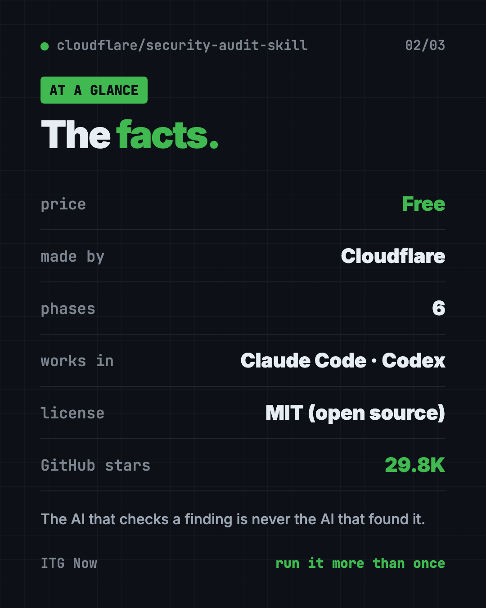
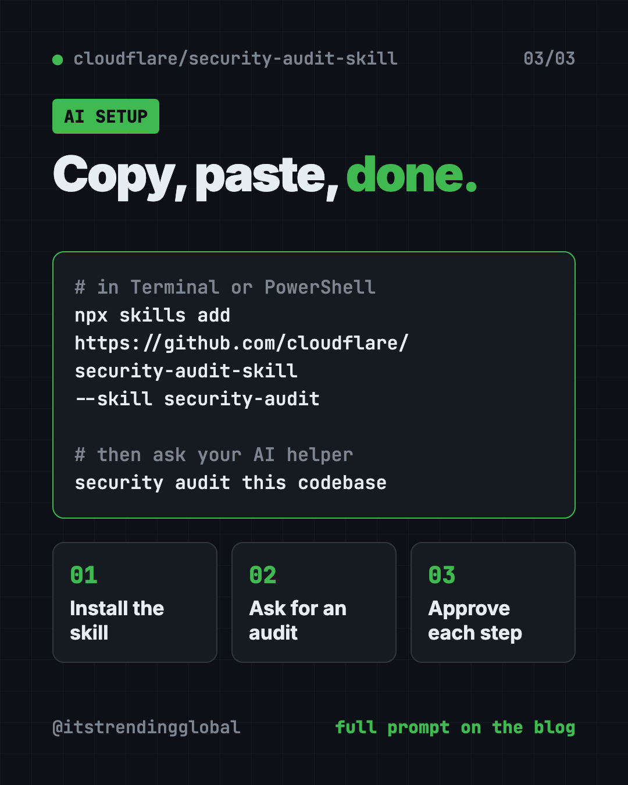
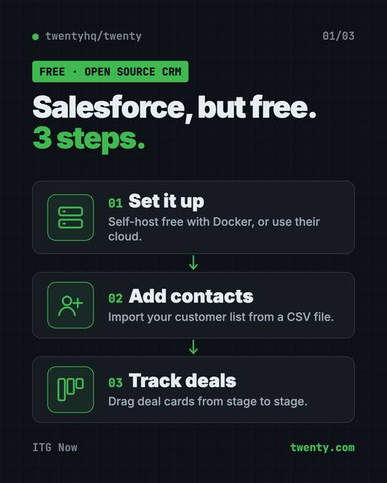

Cloudflare Security Audit: Free AI Code Security Check (2026)
- Published 15 Oct 2026
- Updated 16 Oct 2026
- 8 min read
- License MIT
- By the ITG Now team
In this guide (11)
Cloudflare's Security Audit skill gives you a free AI code security check. You install it into your AI coding helper, type "security audit this codebase," and it hunts for real security holes, double-checks each one, and writes a clear report.
More people than ever build apps with AI helpers. It's fast, but it's easy to ship something that works and still leaks data or lets strangers skip the login. This guide shows how the skill works, how to install it, and how to run your first audit.
Key takeaways
- Free and open source. MIT license, made by Cloudflare, the internet security company.
- A skill for your AI helper. It turns Claude Code, Codex or a similar agent into a security reviewer.
- Six careful steps. Map the app, hunt for problems, try to disprove each one, then report.
- The finder never checks its own work. A fresh AI checker tries to prove every finding wrong.
- Run it more than once. Cloudflare says one run found roughly half of what repeated runs found in total.
What is Cloudflare's Security Audit skill?
A skill is an add-on that teaches your AI coding helper a new job. This one teaches it to audit code for security problems. The README says it "turns your agent into a security auditor."
It comes with history. Cloudflare says this skill "seeded" its own vulnerability-finding system, described on the Cloudflare blog. That system later grew into a much bigger tool. This skill is the single-project starting point.
On GitHub it has about 29.8K stars. Stars are like bookmarks, so a lot of builders are paying attention.
💡 Tip: This tool is for checking code you own or have permission to review. Point it at your own project.

How to use the Security Audit skill (real examples)
Here are everyday moments when it helps.
- Before you launch. Built a side project with AI? Run "security audit this codebase" before you share the link.
- After a big change. Added payments or user accounts? Run it again. Repeat runs build on the last one.
- Check one folder. Say "find security vulnerabilities in ./src" to focus on the main code.
- Ask a quick question. Smaller security questions get guidance, not a full audit, unless you ask for reports.
- Keep reports tidy. Say "do a security review, output to ~/audits/my-project" to choose where the reports go.
How does the audit work?
The skill runs six phases. In plain words:
- Map the app. It finds how your app is built, where outside input comes in, and where safe areas meet unsafe ones.
- Hunt. Separate AI "hunters" each check an assigned part of the code. "Critics" look for spots they missed.
- Try to disprove. Every possible problem goes to a fresh AI checker whose job is to prove it wrong.
- Sort the results. Each one becomes "confirmed," "needs validation" or "rejected."
- Check again. New AI helpers verify the final claims against the actual code.
- Report. It writes a main report, a details file, and a list of open questions.
💡 Tip: Start with the main report,
REPORT.md. It's the summary. Open the details file only for the items you plan to fix.
Why trust its findings?
The README lists a few strict rules:
- Only confirm real failures. A problem is "confirmed" only with a full trace through the code.
- Adversarial checking. "The agent that checks a finding is never the agent that found it."
- Severity needs impact. How bad a problem is depends on how likely and how harmful it is, not on a checklist.
- Missing extras aren't holes. If one layer already blocks an attack, a missing second layer is a "hardening note," not a vulnerability.
That means fewer false alarms and a report you can act on.
Security Audit at a glance
| Price | Free (your AI helper's usage may cost money) |
| Works offline | No, your AI helper needs the internet |
| Platforms | AI coding agents like Claude Code and Codex, on Mac, Windows or Linux |
| License | MIT (open source) |
| Made by | Cloudflare |
| Output | REPORT.md, FINDINGS-DETAIL.md, NEEDS-VALIDATION.md |
| Best for | Solo builders, startups and teams who want a careful first security pass |

How to install the Security Audit skill
You need three things, per the README:
- An AI coding helper whose model can use tools and run several helpers at once.
- Node.js, a free program many tools run on.
- A locked-down sandbox if you want it to run your code. More on that below.
Open Terminal (Mac or Linux) or PowerShell (Windows). Copy and paste this:
npx skills add https://github.com/cloudflare/security-audit-skill \
--skill security-audit
Want it in every project on your computer? Copy and paste this instead:
npx skills add https://github.com/cloudflare/security-audit-skill \
--skill security-audit \
--global
Now open your AI helper inside the project you want to check. Type this:
security audit this codebase
By default, reports are saved in ~/security-audit-skill/<your-project-name>/run-<N>. They stay out of your project folder unless you choose otherwise.
⚠️ Heads up: A full audit sends many AI helpers through your code. That can use a lot of your AI plan. Check your limits first.
⚠️ Heads up: To actually run your code during testing, the README asks for a sandbox: a sealed-off space with no internet and strict limits. Without one, the skill marks a problem "needs validation" instead of running your code.
Let Claude or Codex set it up for you
Claude Code and OpenAI Codex are AI helpers that can run setup steps on your computer. You paste a request, it does the work, and you approve each step. Here, the same helper then runs your audit.
Copy and paste this:
Please help me install Cloudflare's security audit skill from github.com/cloudflare/security-audit-skill.
1. Check that Node.js is installed. If not, explain how to install it.
2. Install the skill with: npx skills add https://github.com/cloudflare/security-audit-skill --skill security-audit
3. Explain each step before you run it.
4. Then run a security audit of this project and save the reports to ~/audits/my-project.
5. When it's done, summarize REPORT.md in plain words, most serious first.
Then try asking:
Explain the top confirmed finding like I'm not a programmer, and show me the safest fix.
What's in NEEDS-VALIDATION.md, and what would it take to confirm or rule out each item?
I fixed the issues. Run the security audit again and tell me what changed.

What are its limits?
- Not a guarantee. No tool finds every problem. Cloudflare's own tests show repeat runs find more.
- Uses a lot of AI. Big projects mean big usage.
- Needs a capable AI helper. The model must support tools and parallel helpers.
- Running code needs a sandbox. Without one, some findings stay unconfirmed.
- You still fix things. It reports problems. You, or your AI helper, make the changes.
Our take
This is a serious security process, free, from a company that does security for a living. The rule that a fresh checker must try to disprove every finding is what makes it stand out.
What we like:
- Free and open source, from Cloudflare.
- Careful checks that cut down false alarms.
- Clear reports that separate "confirmed" from "needs validation."
- Repeat runs build on earlier ones.
- Reports stay out of your project by default.
What to watch for:
- Can use a lot of your AI plan.
- Setup for safe code running takes extra work.
- Best for people who can act on a security report, or have an AI helper to do it.
Want more guardrails for your AI coder? ECC includes its own scanner for your AI setup. Superpowers makes your AI plan and test before it builds. This skill also made our September 21 weekly trending list.
FAQ
Is Cloudflare's Security Audit skill a free AI code security check?
Yes. The skill is free and open source under the MIT license. Your AI coding helper's usage may cost money.
Which AI helpers does it work with?
It works with coding agents whose model supports tools and parallel helpers, like Claude Code and Codex. You install it with the Skills CLI.
Will it find every security problem?
No tool can promise that. Cloudflare says one run found roughly half of what repeated runs found in total, so run it more than once.
Does it change my code?
It writes reports, not fixes. By default the reports go to a separate folder, not into your project.
Does it run my code?
Only inside a locked-down sandbox with no internet. Without one, it marks the problem "needs validation" instead of running your code.
Where are the reports saved?
By default in ~/security-audit-skill/<your-project-name>/run-<N>. You can choose a different folder in your request.
Get the Security Audit skill: github.com/cloudflare/security-audit-skill
More free security tools
- OpenSEO OpenSEO is a free Semrush alternative for keyword research, rank tracking and site audits. It's open source, and you pay only for the search data you use.
- ECC ECC is a free Claude Code plugin with 71 agents, 311 skills, memory and a security scanner. It teaches your AI coder to plan, test and review.
Latest AI news
- Meta gives away its big Muse Spark AI for free
- Google likely to face ex-NPR host's AI voice suit
- Blackstone says AI data-center debt fears overblown
- SAP passes €10 billion quarterly revenue for first time
Keep reading

Twenty: Free Salesforce Alternative, Open Source CRM
Twenty is a free Salesforce alternative: an open source CRM to track customers, deals and emails. Host it yourself for free or use their cloud.